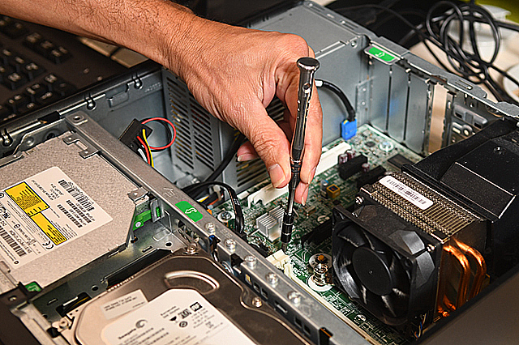

|
|---|
Somos una empresa especializada en el mantenimiento y reparación de computadoras, venta de artículos o productos de calidad, producción de camisetas, gorras, tazas, retrateras a su gusto, con diseños personalizados.
1-Mantenimiento Preventivo de Software Existen acciones periódicas que se deben realizar principalmente sobre el sistema operativo para tener un excelente rendimiento en su pc o los de su empresa. |
2-Mantenimiento Preventivo de Hardware Realizando este mantenimiento a su computador periódicamente evitara que las partes de su computador tengan problemas electrónicos y altas temperaturas. |
3-Mantenimiento Correctivo de Software Solucionamos problemas del sistema operativo ocacionados por virus que ingresan al sistema sin darnos cuenta afectando el desempeño y el buen funcionamiento. |
4-Mantenimiento correctivo de Software se refiere a la corrección, reparación o reinstalación total de una aplicación software, ya que se esté presentado la falla. |
.png) |
 |  |
 |
.png)